Full alternate theme, user-selectable from Settings. Same Go handler, same DOM from every template. Only the layout wrapper + stylesheet change. Login and onboard stay in direction C because the user isn't authenticated yet. Back to direction C spike →
Title bar, menu bar, toolbar, Keyword bar, CHANNELS sidebar, status bar reading "Connection: Direct · 56000 bps". Stats cells, line list, Welcome! toolbar greeting.
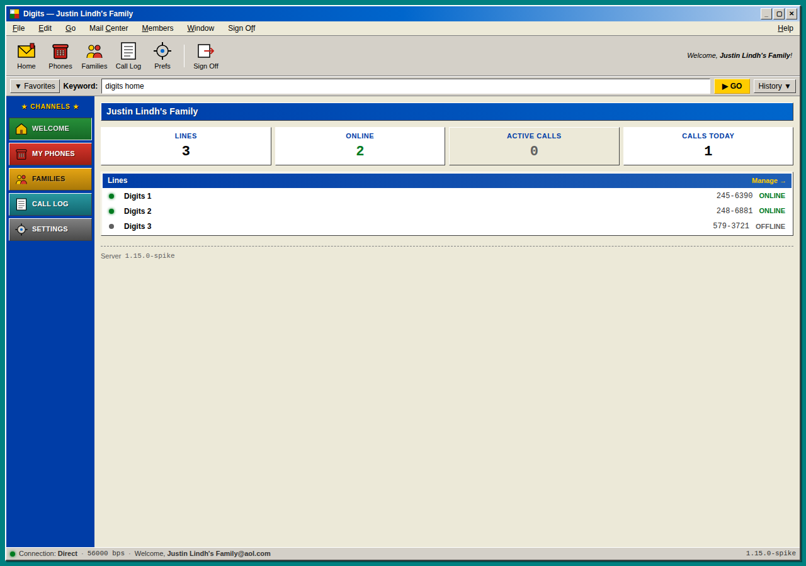
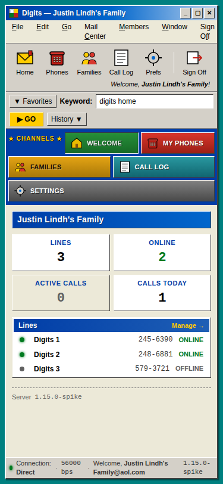
Dark-blue keypad chassis. Chunky cream buttons. Yellow DIGITS strip. Table rows with hover highlight.
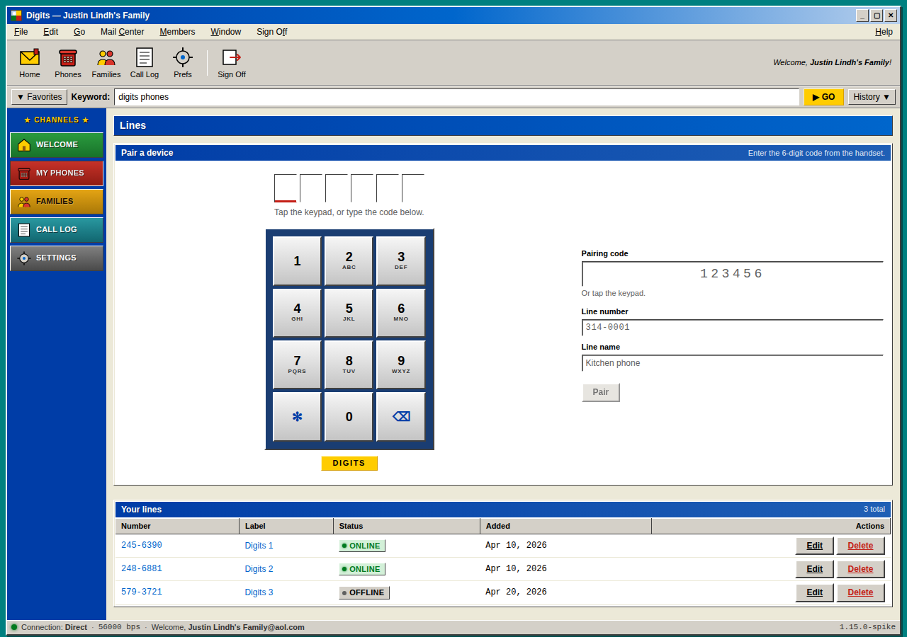
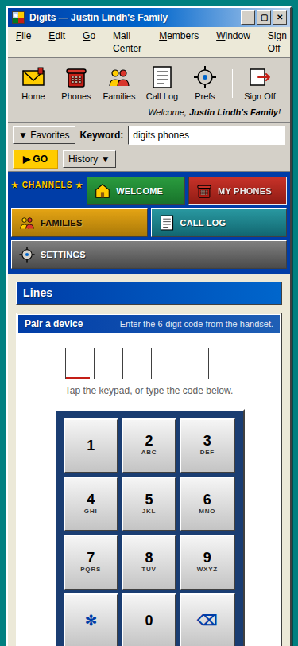
Cherry-red phone silhouette preserved (embedded SVG colors, not theme-controlled). Voice style radio cards, update disclosures, chunky device-control buttons, Recovery mode in red.
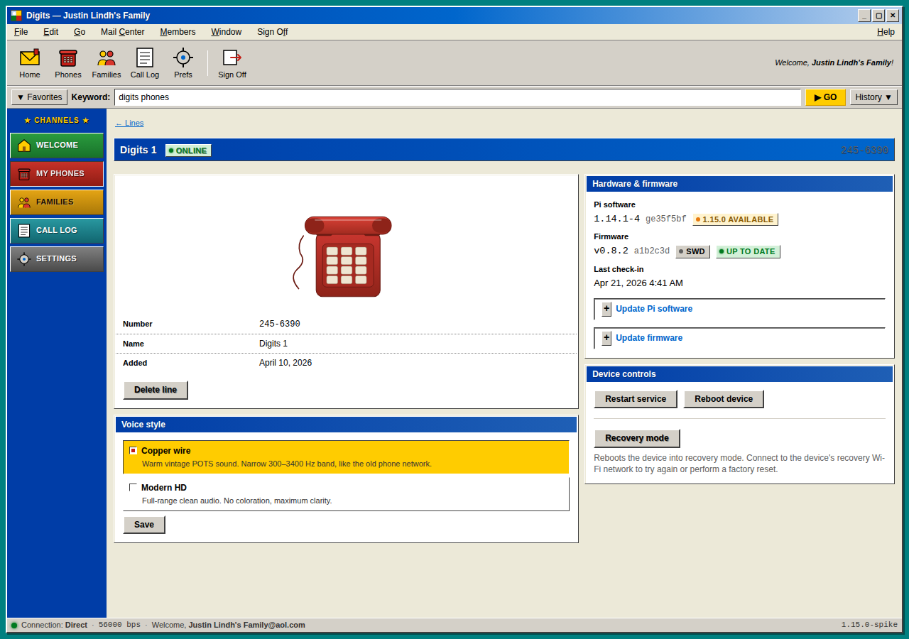
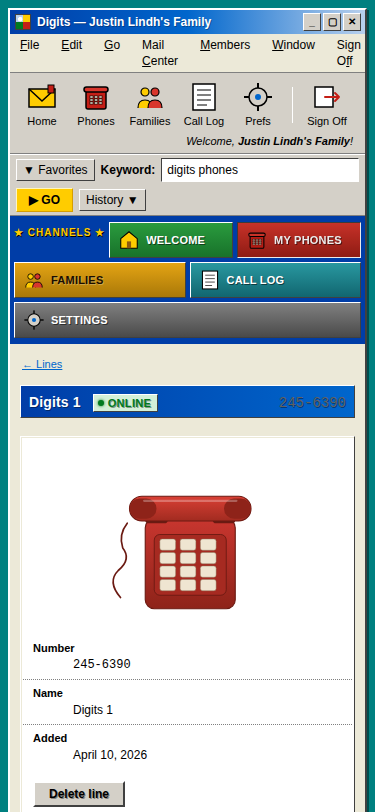
Blue-outlined house silhouettes, dashed brass rail still does its job. Per-family detail panels below.
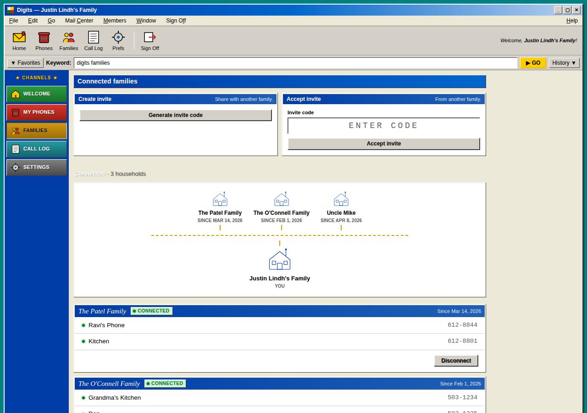
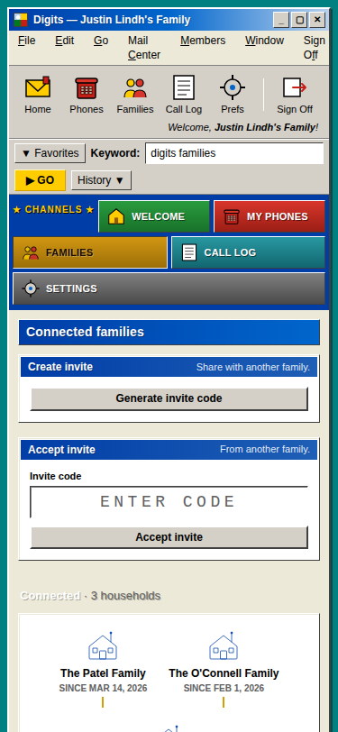
Chunky-bevel table with status chips, tabular-mono times and durations.
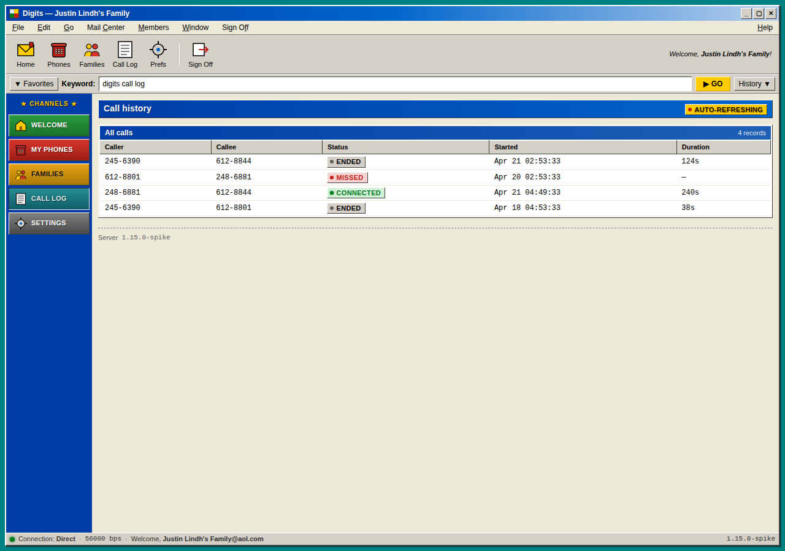
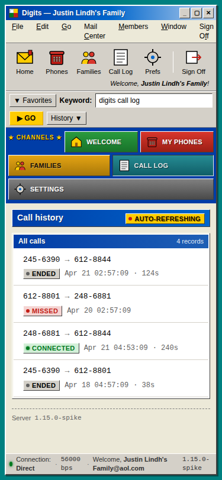
Account, Household, Timezone, Theme (!), Privacy, Session. Green checkmark on the chunky checkbox indicates Call History is on.
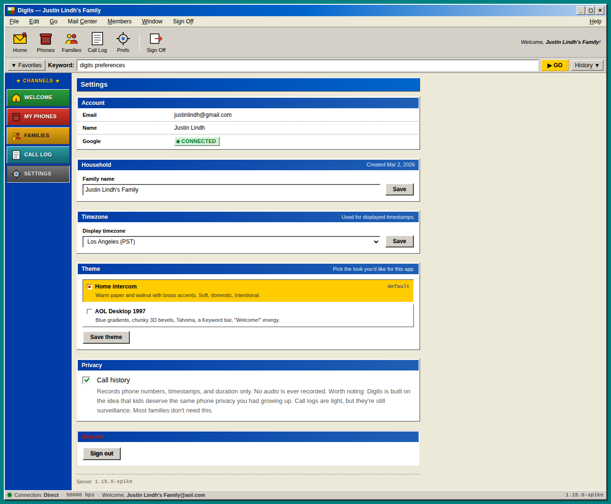
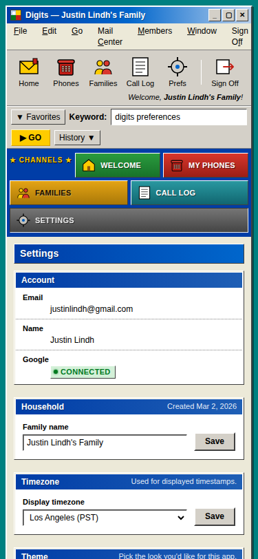
Same panel, rendered in each theme. Radio cards with a "default" meta tag on Home intercom. Posting saves the preference; next page load dispatches to the chosen layout.
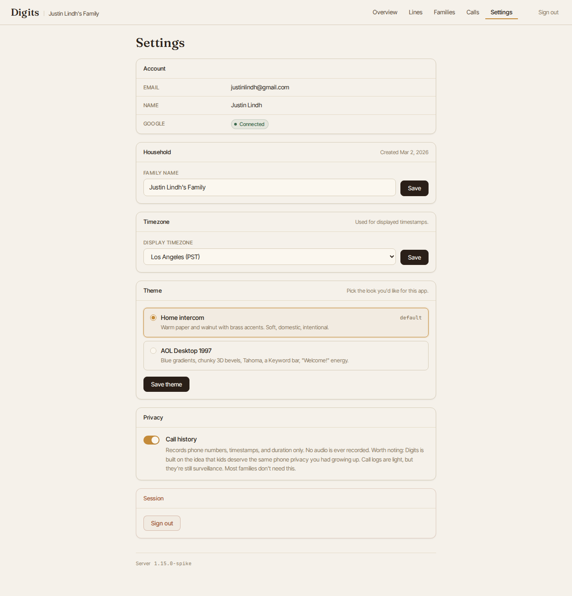